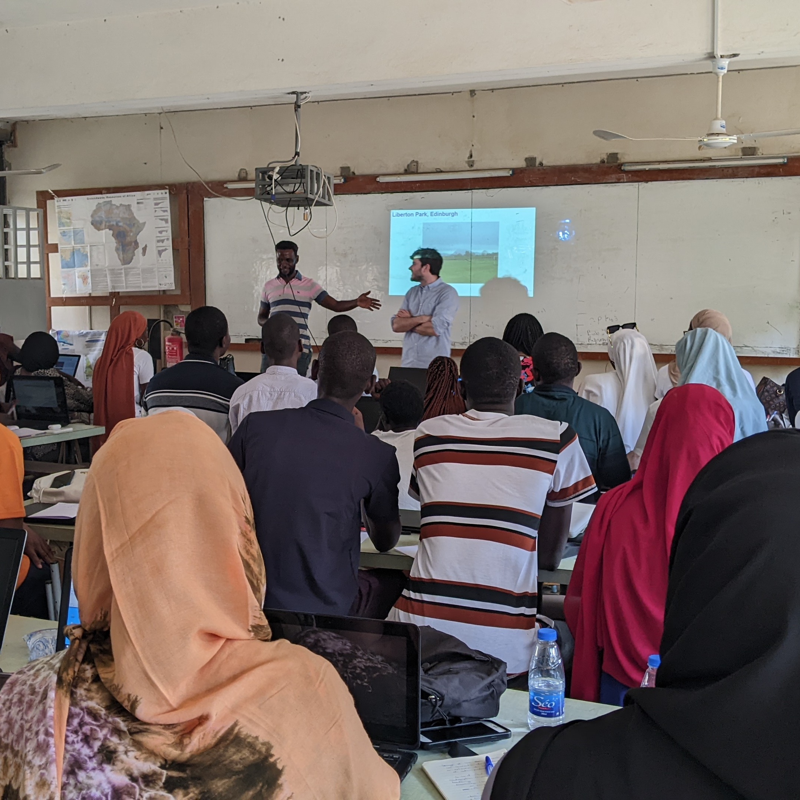

Stuff
 The Sine Saloum Delta is one of Senegal's most dynamic coastal systems, where groundwater, surface water, and tidal processes interact across a mosaic of agricultural and mangrove landscapes. The region lies within the drought-prone Sahel and faces increasing salinity due to reduced rainfall, over-abstraction, and marine intrusion. Despite its agricultural importance, Senegal relies on imports for roughly 70 percent of its food supply, making the protection of freshwater resources in the delta critical to food security and local livelihoods.
The delta's shallow subsurface consists of alternating layers of silty sands, ferruginous clasts, and grey estuarine clays rich in shell fragments. These materials reflect cycles of marine and fluvial deposition that strongly influence groundwater flow and salinity distribution. Field logging confirmed low-permeability clay horizons that restrict vertical recharge, creating perched or semi-confined aquifers vulnerable to saltwater upconing during the dry season.
To better understand the extent of salinization and freshwater availability, Blue Rock Hydro carried out tTEM (transient electromagnetic) surveys across representative agricultural zones and coastal transects. The data provided high-resolution 3D resistivity models down to ~80 m depth, enabling precise mapping of the saline-freshwater interface. These results were combined with lithological logs, water-quality sampling, and local observations to identify priority zones for managed recharge and low-salinity irrigation.
The integrated approach demonstrates how modern, field-portable geophysics can support sustainable groundwater management in vulnerable deltaic environments. By linking resistivity models with soil profiles and farming practices, the study helps target interventions where shallow aquifers remain fresh and highlights areas requiring salinity mitigation. This work forms part of ongoing regional efforts to strengthen climate resilience and ensure equitable access to freshwater resources in Senegal's coastal communities.